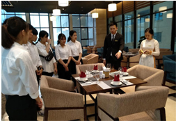

TIN TỨC HỌC TẬP
Sinh viên FPT Polytechnic giành quán quân "FPTHackathon 2018"

FPT Edu Hackathon là cuộc thi tổ chức bởi Tổ
chức Giáo dục FPT (FPT Education) dành cho
sinh viên Công nghệ thông tin theo mô hình
Hackathon nổi tiếng của thế giới.
Sinh viên khối ngành Kinh tế học cách “chạm” vào cảm xúc

Với sự tham gia của chuyên gia trong lĩnh vực
kinh doanh, chương trình đã thu hút đông đảo
sinh viên Cao đẳng FPT Polytechnic tham dự.
Đặc biệt các bạn sinh viên bị lôi cuốn bởi
Sinh viên FPoly trải nghiệm thực tế tại Mường Thanh Luxury

Với triết lý đào tạo “Thực học – Thực nghiêp”,
Cao đẳng FPT Polytechnic Đà Nẵng thường
xuyên tổ chức cho sinh viên tham quan các
đơn vị doanh nghiệp